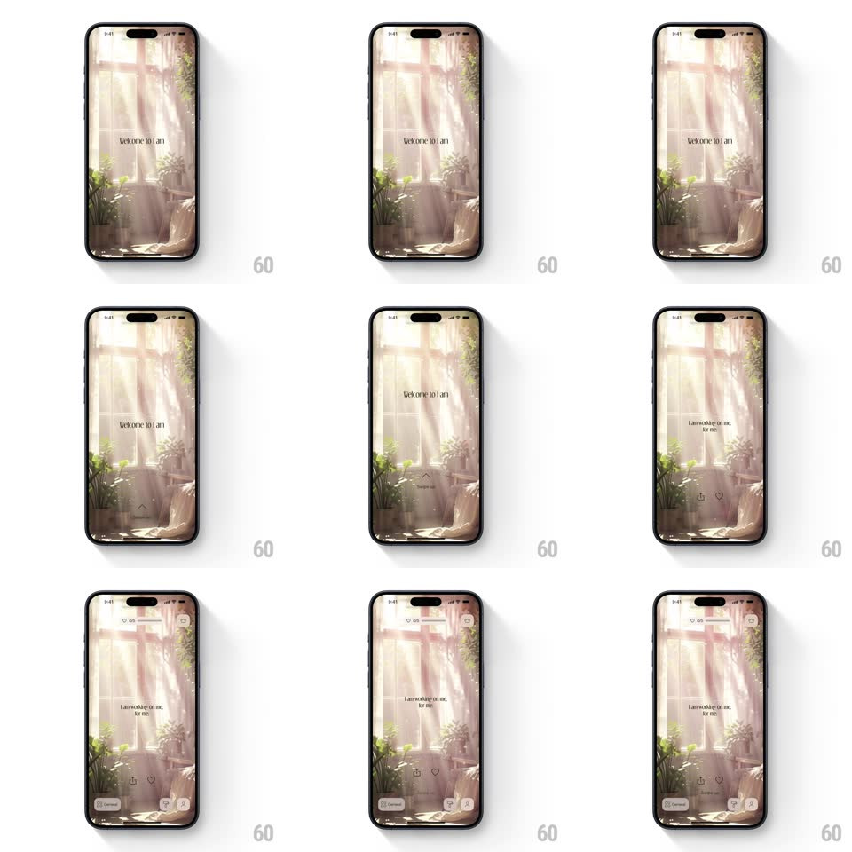

Media
Frame-by-frame

Rebuild this interaction 1:1: I am's intro - over a full-bleed sunlit-room illustration, "Welcome to I am" fades in, a swipe-up arrow invites the gesture, and swiping up lifts the welcome into the mantra "I am working on me, for me." as the app's header and category chips slide into place.

Rebuild this interaction 1:1: I am's intro - over a full-bleed sunlit-room illustration, "Welcome to I am" fades in, a swipe-up arrow invites the gesture, and swiping up lifts the welcome into the mantra "I am working on me, for me." as the app's header and category chips slide into place. ## Integration Integration: stack-agnostic spec - springs given as stiffness/damping, timed motions as duration + curve; map every value to your framework and animation library of choice. ## Scene Full-bleed warm illustration (sunbeams through windows over plants and a chair): centered "Welcome to I am", a small up-arrow affordance below, then the entered state: mantra "I am working on me, for me." with heart/smile icons, a top bar (search, streak, settings), and bottom category chips (General and letters). ## Motion spec Pattern: swipe-up enter transition, gesture-driven. - Entrance: the illustration crossfades in with a slow settle zoom (scale 1.08 -> 1, 1.2s); "Welcome to I am" fades in (400ms), then the arrow fades in with a gentle bounce loop (translateY 0 -> -8px, 900ms alternate). - Swipe: dragging up moves the welcome text with the finger (1:1, fading past 60px); releasing past 30% commits, else it springs back (spring ~320/22). - Commit: the welcome lifts off (300ms, ease-out) as the mantra rises into center (350ms, +80ms) and the header bar slides down and chips slide up (300ms, staggered 80ms). ## Calibration - The background illustration never moves during the swipe - only the UI layer transitions. - The arrow's bounce stops the moment the touch starts. ## Reduced motion Tapping the arrow crossfades welcome to mantra (300ms); header and chips fade in. ## Don't miss - The mantra is the app's core line - it lands centered and stays. - The illustration stays full-bleed behind the entered UI; nothing crops it.